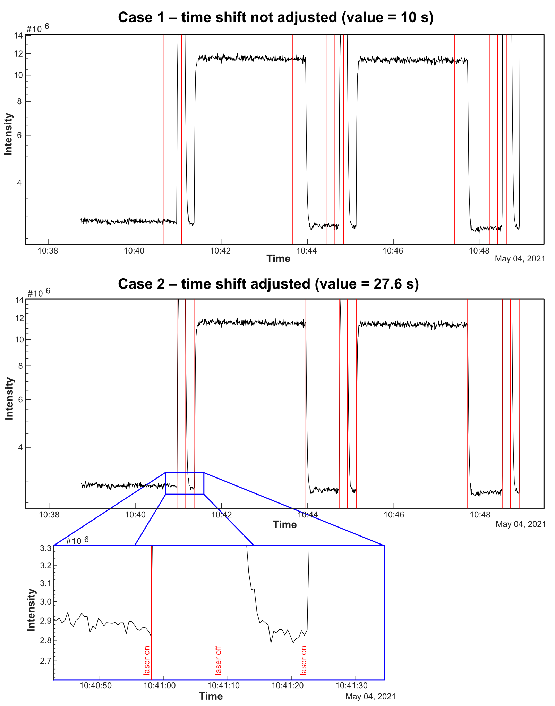
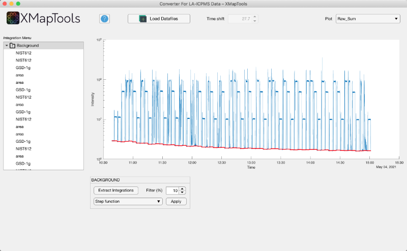
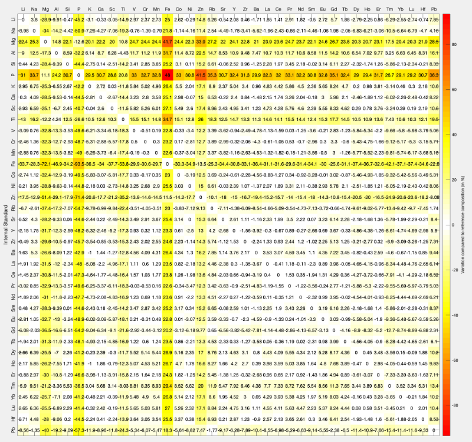

Help > Tools > Converter For LA-ICPMS Data
Help file version 28.02.2025 by P. Lanari & T. Markmann
Table of content
Main steps
Detailed description
- Step 0: Load datafiles
- Step 1: Log Generator Module (Optional)
- Step 2: Adjust time shift
- Step 3: Extract integrations & plot data
- Step 4: Apply background correction
- Step 5: Select primary standard
- Step 6: Select and check secondary standard
- Step 7: Generate map files
This help file contains a description of the Converter for LA-ICP-MS data, which can read LA-ICP-MS data natively. The data reduction method is described in the following paper:
Markmann, T.A., Lanari, P., Piccoli, F., Pettke, T., Tamblyn, R., Tedeschi, M., Lueder, M., Kunz, B., Riel, N., and Laughton, J. (2024). Multi-phase quantitative compositional mapping by LA-ICP-MS: analytical approach and data reduction protocol implemented in XMapTools. Chemical Geology, 646, 121895.
Main steps to import LA-ICP-MS data
- Import files (1) a data file from the mass spectrometer containing time stamps and intensity data, and optionally (2) a log file from the laser system.
- Adjust the time shift to synchronise the two data sets
- Generate a log file (if not available) using the Log Generator module
- Extract integrations for each measurement
- Apply a background correction using one of the available functions
- Select primary standard(s) and fit to generate a primary standard intensity function
- Select secondary standard(s) and check the quality of standardisation for each element selected as an internal standard
- Generate maps using the interpolation method described in Markmann et al. (2024) for unknowns and standards, and export map files

Figure 1: Example of data generated by the converter for LA-ICPMS data. Top: K intensity map of the sample expressed in background corrected intensity (cps). Middle: K intensity map of the primary reference material expressed in background corrected intensity (cps). Note that several primary reference materials can be defined. below: K pseudo map for the primary reference material expressed in µg/g. .
Detailed description
The data processing steps are described below. The process is fast, so if something goes wrong during the import, it is recommended that you close the module and start again.
Step 0: Load datafile(s)
The import tools are located at the top of the interface (Figure 2). The following options can be selected:
- File format (Mass spectrometer): current compatible file formats are Agilent, Thermo.
- File type: can be "single file" or "multiple files". The data from a measurement session can be contained in a single file or multiple files. Note that if multiple files are selected, it is recommended that you select the last file first and then hold maj while selecting the first file, not vice versa.
- Laser log file: "yes" if selected, otherwise "no". If no log file is available the Log Generator module will appear when the Load Datafiles button is pressed. Note that a log file cannot currently be used with multiple files.
- Analysis name format: current compatible formats are "Name - ID" or "Name_ID"
Figure 2: Options for importing LA-ICPMS data.
.
Once appropriate options have been selected, press the Load Datafiles button to select: (1) a single data file from the mass spectrometer containing timestamps and intensity data (e.g. Data.csv) or multiple files (see warning above), and (2) if the Log File option is enabled, immediately after a corresponding log file (e.g. Log.csv) from the laser system (tested with RESONETICS only).
When the opening window pops up, select the data first. A new window will automatically pop up if the Log File option is enabled to select a compatible log file.
For each file, the date and time format can be set by selecting the correct format from the list (Fig. 3). The date and time read is displayed at the top of the window under Label.
Figure 3: Example of selecting the date and time format for each file type.
.
Step 1: Log Generator Module (Optional)
The Log Generator module opens when multiple files are selected (Fig. 4). This module can be used to set the map size (Map Settings) and the laser on and off times for each measurement.
Figure 4: Log Generator Module.
.
The first step is to set the map settings. You can set the start position (X and Y), but the default values [1,1] should work for most applications. The laser diameter must be set to obtain the correct pixel size in the generated maps. The scan speed must be defined to allow the spatial coordinates of each sweep to be calculated. An incorrect scan speed would result in a deformed map around the X dimension.
The second step is to adjust the file names using the tools in the File Names tab. The aim is to have identical file names for each type of measurement. In the example shown in Figure 5, the original file name is 493-STDGL3. The material name is STGDGL3 and therefore the name position is 2 when the string is split with a '-' delimiter. Adjust the format and if the example shown for the first name works, press the Apply to all button.
Figure 5: Customise file names in the Log Generator module.
.
The third step is to select a filename from the table to display the signal (sum of the intensities). In the signal definition section you can use a ROI to select a part of the signal (e.g. between sweeps 13 and 93 in Figure 6). Here the sweep start value has been manually set to 1 and the type is background. Then, press Add to table to add the entry to the table (Fig. 6). Then a measurement can be added between the next sweep and the last sweep (2 to 258 in Fig. 7)

Figure 6: Example of signal definition
.
Figure 7: Example of signal definition (continued)
.
The fourth step is to select the Apply tab and press the Apply to Same Name button. The signal definition will then be applied to the file names with the same name (Fig. 8).
Figure 8: Example of signal definition (continued)
.
This operation must be repeated to apply the signal definitions to all measurements. Note that the number of sweeps for each type of signal (background/measurement) can be edited in the table (e.g. Sweep_End to 315 in the bottom right table in Fig. 9).
Finally, press the GENERATEW LOG button to apply the changes and return to the Converter module.
Figure 9: Example of signal definition (continued)
.
Step 2: Adjust time shift
The value of the time shift can be adjusted to synchronise the data file with the log file. In the main figure, the total signal is plotted together with the laser on/off signals given in the log file (vertical red lines).
The shift value is automatically adjusted by XMapTools when the data is imported. If necessary, adjust the value until both signals are synchronised (see example in Figure 3 below).
It is possible to zoom in on the figure to adjust the display. Click on the Zoom In button or hover over the diagram and look for the Zoom In button in the Plot panel, which appears in the top right hand corner of the diagram. You can also pan the diagram by selecting the pan mode (hand button) in the diagram panel. Press the Reset button to reset the display.

Figure 3: Adjustment of the time shift between the data file and the log file. Case 1: The time shift value is 10 s and there is a mismatch between the laser on/off signals, shown as red vertical lines, and the total intensity variation (black curve). Case 2: The time shift value has been increased to 27.6 s, shifting the laser on/off signals forward. They are now perfectly aligned as shown in the inset.
Step 3: Extract integrations & plot data
Once the value of the time shift is optimised, press the Extract Integrations  button to automatically extract all the analyses listed in the log file. They should appear in the Integration tree menu on the left of the window after extraction.
button to automatically extract all the analyses listed in the log file. They should appear in the Integration tree menu on the left of the window after extraction.
The Plot dropdown menu at the top right of the window can be used to select the signal to be displayed in the main window (raw data for one element, the sum or all elements).
Step 4: Apply background correction
The integrations for fitting a background correction are automatically selected for each measurement. They are listed in a tree menu (integration menu) located on the left and can be plotted by selecting an item under the category Background
The following categories are available in this tree menu:
 Background
Background - Primary Standard
 Secondary Standard
Secondary Standard- Scans
Display/edit integrations for background
To view and edit integrations, select the first measurement in the tree menu. The display is automatically adjusted to zoom in on the selected integration. If you select a different measurement in the tree menu, the integration will be displayed in the centre of the plot.
The program automatically excludes a fraction of sweeps at the beginning and at the end of each background measurement (default value is 10 %). This value can be changed manually if required. It is also possible to manually edit the duration of an integration by changing the limit values available as Sweep (min and max), below the menu: 
Note that at any time you can press the Extract Information button to restore the automatic integration intervals for the background. Any changes made to the integration will be lost.
Background interpolation
Select a method for fitting the background in the BACKGROUND section below the plot. It is recommended to display the signal Raw_Sum and to adjust the display to show the entire background signal.
The following functions are available:
- Linear
- Polynomial
- Step function
- Spline
Due to the compositional variability of each material analysed (standard sample), an optimal background correction is usually obtained using a step function (Markmann et al. 2024).
Press the button Apply to apply the background correction. You cannot change the background correction once it has been applied.

Figure 4: Converter For LA-ICPMS data after selecting the background intervals and applying a step function background correction. Pressing the Apply button would apply the correction.
Step 5: Select primary standard(s)
The background-corrected (BackCorr) signal is displayed when a background correction has been applied. Corrected data are available from the Plot menu.
Select the measurement to be used as the primary standard from the PRIMARY STANDARD drop down menu. The integration name should match the name of a standard file containing the composition of this standard (e.g. NIST612 or GSD-1g). It is also possible to add custom files using the options available in the lower left panel, but this process must be repeated each time the converter is used. Contact us to get your standard files in the next release.
Integrations can be edited using the same strategy as for background integration (see above).
Then select an interpolation method. A spline function is usually the best method to approximate instrument drift during the measurement, especially when reconstructing maps (Markmann et al. 2024). A step function can also be used in some cases, but this can result in sharp transitions between lines in the final map.
Press the Apply button to validate and interpolate the primary standard signal. The program will generate standard data as shown in the second image of Figure 1. If the standard is not automatically recognised, a window will open with a list of all available standards. Note that it is possible to add additional standard definitions beforehand using the options panel available at the bottom left of the interface.
It is possible to define additional interpolations to be used as primary standards. After pressing the Apply button it is possible to define a new interpolation for the same material or for a different material by selecting the Yes option. If you do not wish to define any further interpolations to be used as primary standards, select No (Continue).

Figure 5: Converter For LA-ICPMS Data after selecting the primary standard and applying a polynomial fit. Pressing the button Apply would apply the correction.
Step 6: Select and check secondary standard
Select the measurements to be used as the secondary standard using the drop down menu under SECONDARY STANDARD. Integrations can be edited using the same strategy as for background integration and primary standard (see above).
Use the Int. Std drop down menu to select an element to be used as a reference for calculating the composition of the secondary standard. This choice has no effect at this stage on the map calibration performed in XMapTools (another element can be used). But here it is possible to quickly check the calibration using the secondary standard for several elements used as internal standard.
An example is shown in Figure 6 below.

Figure 6: Selection of a secondary standard and data quality check.
The table in Figure 6 shows the average composition of the secondary material (integrated over all measurements) compared to the reference composition for all elements. The last column shows the difference between the measured and reference compositions expressed in %.
The Cal. Matrix button generates a calibration matrix showing how the secondary standard matches the reference composition for each element selected as reference. An example is shown in Figure 7.
Pressing the button Apply ends this step.

Figure 7: Calibration matrix showing the percentage drift for each element (x-axis) as a function of the element used as internal standard (y-axis). A row therefore represents a calibration with a single element as internal standard.
Step 7: Generate map files
Maps can be generated from raster measurements after background correction, adjustment of the primary reference material(s) and checking of the secondary reference material(s).
Use the drop down menu in MAPS (SCANS) to select the raster measurements to be used to construct the map. Integrations cannot be edited, but a cycle shift can be applied if there is a long transport time between the ablation cell and the mass spectrometer.
Press the Apply button to validate and generate the maps. Three buttons become available.
- The Check button opens two new figures in external windows. The first one shows the ablation paths (red dots) and the position of each pixel (black squares) on the final image in the LA-ICPMS coordinate system. The second figure shows the corresponding grid in map coordinates.
 The Show button opens a new figure and, for the element selected from the drop down menu, displays several maps as shown in Figure 1: (1) Element intensity map of the sample expressed in background corrected intensity (cps). (2) Element intensity pseudo-map of the primary reference material expressed in background corrected intensity (cps) and (3) Element pseudo-map for the primary reference material expressed in µg/g as well as the background map, the number of sweeps for background and the number of sweeps for unknowns used to calculate the LOD (Markmann et al. 2024).
The Show button opens a new figure and, for the element selected from the drop down menu, displays several maps as shown in Figure 1: (1) Element intensity map of the sample expressed in background corrected intensity (cps). (2) Element intensity pseudo-map of the primary reference material expressed in background corrected intensity (cps) and (3) Element pseudo-map for the primary reference material expressed in µg/g as well as the background map, the number of sweeps for background and the number of sweeps for unknowns used to calculate the LOD (Markmann et al. 2024). - The Export button generates all the maps and standard data and saves them in a folder called Maps_cps. The converter will automatically close when the maps have been generated.
To use the data in XMapTools, click on the Import (Import Maps) button available on the Project & Import tab.
After creating the maps, it is possible to calculate a new dataset using the same settings, if more than one dataset is available.